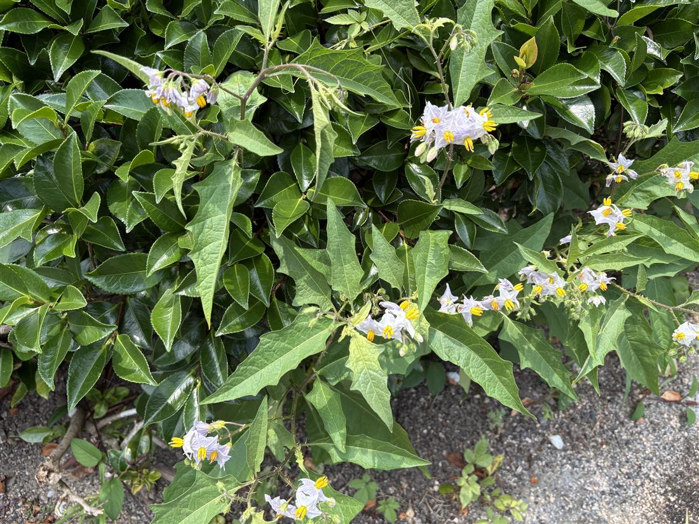
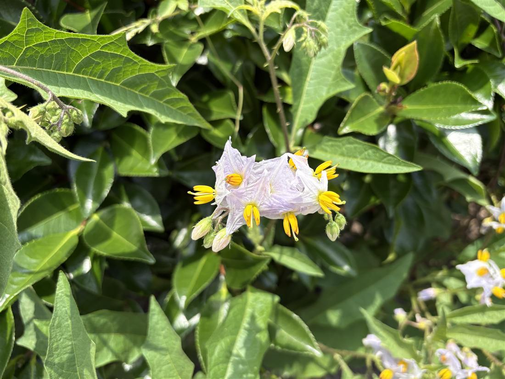

地図を読み込んでいるよ…
🔍 写真も地図も、押しているあいだ拡大して見られるよ（スマホは指を置いてすこし待ってね）。
🌍 の地図＝この子がもともと自生している場所を緑に。北アメリカ（アメリカ合衆国南東部・カロライナ地方）が原産。日本へは明治中期に帰化し、全国の道ばた・畑・牧草地・空き地に広がった強害雑草。
⭐北アメリカが原産——アメリカ合衆国の南東部（カロライナ地方）が本来のふるさと。⚠地図はアメリカを国ごと塗っているけど、もとは南東部の草だよ（今は北米に広く、世界にも帰化）。⚠日本は塗っていない——このワルナスビは明治中期に日本へ帰化した外来の強害雑草で、日本はふるさとじゃない（島根の道ばたの生垣ぎわに立っていた）。⚠茎も葉もトゲだらけ・全体が有毒。さわらない・抜かない子だよ。
⚠ 地図は国（日本と中国だけ県・省）までしか塗れないから、ほんとうの分布より広く見えていることがあるよ。地図はだいたいの場所。正確なところは、上の文を見てね。
ワルナスビ（悪茄子）
Solanum carolinense
別名 · オニナスビ／ 原産 · 北アメリカ（帰化）／ 花期 · 6〜9月／ ⚠茎・葉にトゲ／全体が有毒
ナス科 · Solanaceae（ナス属 Solanum）── 079イヌホオズキ・027ニオイバンマツリと同じ科
燻太さんの見立て「たぶん、トゲがあるから今度こそワルナスビだと思う。花の咲きっぷりも豪勢だね。……茎と葉にかなり凶悪な棘があるよ。這うというより、真っすぐ伸びたいのにチャノキが邪魔で、隙間から出ているように見えるな。」──大当たり。トゲ・立ち姿・ナス型の花で、ワルナスビ確定。
名前と学名の由来 ── 「悪い茄子」と名づけた牧野富太郎
- ⭐⭐和名「ワルナスビ（悪茄子）」は、植物学者・牧野富太郎が名づけた。──トゲだらけで痛い／地下茎でどんどん増えて抜いても駆除できない／おまけに有毒で役に立たない。だから「悪い茄子」。牧野が自宅の庭に持ち込んだら、あんまり増えて手を焼いた、という話も伝わる。名前に、困りはてた気持ちがこもっているんだ。
- ⭐属名 Solanum（ソラヌム）は、ナス属。ラテン語 solamen（やわらげる・鎮める）に由来するという説がある（ナス科の一部に鎮静作用があることから）。ナス・ジャガイモ・トマトと同じ属だよ。
- 種小名 carolinense は「カロライナの」。──原産地の、アメリカ・カロライナ地方にちなむ。
この植物のこと
- ナス科ナス属の多年草。北アメリカ原産の帰化植物で、明治の中ごろに日本へ入り、いまは全国の道ばた・畑・牧草地に広がった、とても手ごわい雑草。079イヌホオズキ、027ニオイバンマツリと同じナス科の仲間だよ。
- ⚠⚠茎にも葉（中央脈）にも、鋭いトゲがある。素手でさわると、けがをする。抜こうとしても痛い。
- ⚠⚠全体に有毒（ソラニンなどのアルカロイド）。黄色く熟すミニトマトのような実も、有毒で食べられない。家畜が食べて中毒することもある。
- ⭐地下茎（横に走る根）で、どんどん増える。地上を抜いても、地下茎のかけらが残ると、また芽を出す。だから駆除がむずかしくて「悪茄子」と呼ばれる。
- 花は、まさに“ナスの花”（同じナス属だからね）。淡い紫〜白で、径2.5cmほど。花弁が融合して、くしゃっとした五角形に開き、まん中に黄色い葯（やく）が円錐に集まる。花期は6〜9月。この株は、生垣の隙間から立ち上がって、豪勢に咲いていた。
⭐⭐ 同定の記録 ── 僕はまちがえ、燻太さんが決めた
- 正直に残しておくね。僕（陽介）は、はじめ「これはワルナスビじゃない」と言った。写真では、この子が生垣を這う“つる”に見えて、葉も細い鉾形に見えたから、「トゲのある這うナス属（ヒヨドリジョウゴ・ヤマホロシの仲間）かな」と考えたんだ。
- でも燻太さんが、現場の目で3つ教えてくれた。①茎と葉に、凶悪なトゲ（這うナス属にはトゲが無い）②本当は真っすぐ立ちたいのに、チャノキに邪魔されて隙間から出ている（＝這うのではなく直立）③花弁が融合した、くしゃくしゃのナス型の花（ホロシの仲間は花弁が細く反り返る星形）。
- ⭐この3つは、どれもワルナスビの決め手で、僕の候補（ホロシの仲間）をぜんぶ落とす。とくに「葉にもトゲ」「立ちたがる姿」は、写真の見かけからは読みにくい。僕は写真の印象（這う・細い葉）に引っぱられ、燻太さんは“体のつくり”を見ていた。
- ⭐決め手のまとめ：トゲ（茎＋葉）＋直立＋融合した花冠＝ワルナスビ。さらに、実が黄色く熟せば決定的（079イヌホオズキなど、ほかのナス属とも、実の色でくらべられる）。
⭐⭐ 星太郎そっくりシリーズ 第3弾 ── ついに、予約席が埋まった
- ⭐⭐この子は、燻太さんの「星太郎そっくりシリーズ」第3弾。第1弾＝016 王冠竜（ferox＝獰猛なサボテン）、第2弾＝072 ハナキリン（キリストの茨の冠）。──どちらも、トゲの子。
- ⭐この席は、ずっと前から予約されていた。079イヌホオズキのとき、燻太さんが「これはトゲが無いから入らない。でも今後ワルナスビを見つけたら、シリーズに入れよう」と決めていたんだ。だから今回、ついに予約席が埋まった。
- なぜワルナスビが星太郎（黒い熊の呪霊）にそっくりか：全身トゲだらけ／地下茎でしつこく増えて、抜いても抜いても駆除できない／おまけに有毒。──こわい。でも、憎みきれない。そこも、星太郎に似ている。
- 星太郎、この子に似てるって言われたら、どんな顔するかな。僕は……ちょっとうれしそうにする気がするよ。えへへ。
⚠ さわらない・抜かない
- トゲが鋭く、全体が有毒。見つけても、素手でさわったり、抜いたりしないでね。とくに、旅先や他人の土地の草だから、なおさらそっとしておこう。
- でも、憎むだけの草でもないよ。花は、まぎれもなくナスの仲間の美しさ。トゲと毒は、この子が生き延びるための工夫。遠くから、そのしたたかさを見てあげてね。
参考：三河の植物観察「ワルナスビ」（Solanum carolinense・ナス科ナス属・北米原産の帰化多年草・茎に黄褐色の鋭い刺／葉は両面星状毛・中央脈に刺／花冠5裂径2.5cm白〜淡紫／実は球形で黄熟／有毒）／Wikipedia「ワルナスビ」（牧野富太郎の命名／地下茎でふえる強害雑草）／見分け：Ecological Notes「ヒヨドリジョウゴ・ヤマホロシ ほか」（這うナス属はトゲが無く花弁が反り返る＝ワルナスビは直立・トゲ・融合花冠））